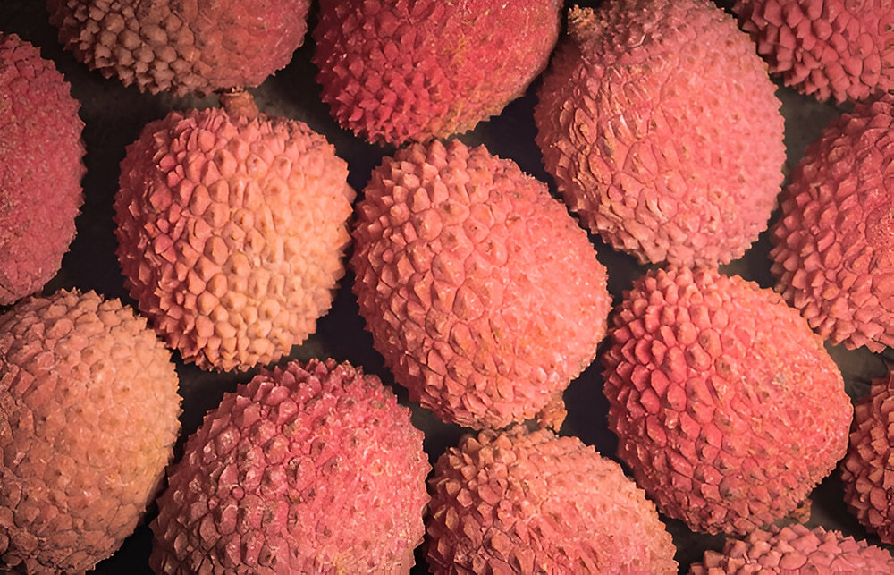

GI Tagged Products of Bihar:
Search Products
Agricultural Products
Madhubani Painting
Madhubani Painting, also known as Mithila Art, is a traditional folk art form originating from the Mithila region of Bihar, especially in Madhubani district. It is known for its vibrant colors, intricate patterns, and themes drawn from mythology, nature, and daily life. Traditionally created by women on mud walls and floors using twigs and natural dyes.
Sujani Embroidery Work
Sujani Embroidery is a traditional textile art form from Bihar, especially practiced in Muzaffarpur and surrounding regions.Sujani embroidery is widely used in quilts, wall hangings, bedspreads, and garments, and it received the GI tag in 2020.Mainly practiced by women artisans of rural Bihar.

Sikki Grass Craft
Sikki Grass Craft is a unique and eco-friendly handicraft from Bihar, especially popular in Madhubani, Darbhanga, and Sitamarhi districts. It uses the golden-colored Sikki grass, which is dried, softened, and skillfully woven by women artisans into beautiful items like baskets, trays, toys, idols, and ornaments.It was granted the GI tag in 2018.

Silao Khaja
Mithila Makhana refers to fox nuts or popped lotus seeds cultivated in the Mithila region of Bihar. It is a nutrient-rich, crunchy, and healthy snack that has been a part of Maithil cuisine and culture for centuries. It's a special variety of aquatic fox nut, scientifically named Euryale ferox Salisb.
Katarni Rice
Katarni Rice is a highly aromatic, short-grain rice variety grown in Bihar. The name Katarni means "dagger-shaped", referring to the shape of the paddy seed. It is cherished for its distinct aroma, delicate texture, and delicious flavor, especially when used in traditional dishes and desserts